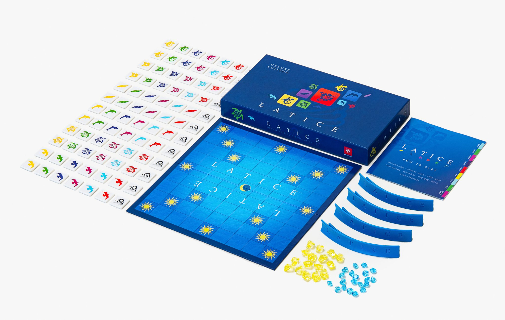
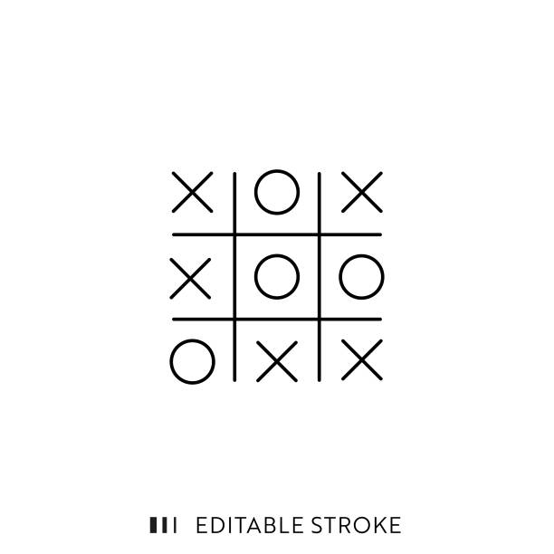

Développeur / Concepteur d'applications
Etudiant en seconde année à l'IUT du Limousin
Je suis en recherche d'un stage d'une durée de dix semaines
Étudiant en deuxième année de BUT Informatique à l'IUT de Limoges, je suis passionné par le développement d'applications et la programmation.
Au fil de mes projets académiques et personnels, j'ai acquis des compétences en Python, Java, PHP, SQL, React Native, JavaScript, HTML/CSS, que j'ai mises en pratique à travers des réalisations variées, comme la création d'un jeu en Java/JavaFX ou d'une application mobile en React Native permettant de scanner des codes-barres et d'afficher des informations produits.
J'aime concevoir des solutions qui allient clarté, efficacité et qualité de code, tout en restant attentif aux besoins des utilisateurs. Mon objectif est de continuer à apprendre et à contribuer à des projets concrets, aussi bien dans un cadre académique que professionnel.
Cliquez sur une carte pour voir les détails

Chaque joueur place ses tuiles sur un plateau en les associant par couleur ou symbole à celles déjà posées. Le but est de se débarrasser de toutes ses tuiles le premier, en utilisant stratégie et anticipation.
En scannant le code-barres d'un produit, Yuka fournit une note de qualité basée sur la composition (valeurs nutritionnelles, additifs, ingrédients).
Développement d'une application visant à simplifier la création de documents pour les employés chargés de l'assemblage et de la mise en œuvre des outils et produits.

Développement de plusieurs mini-jeux en Python, incluant un jeu de devinettes, un morpion, et le jeu des allumettes avec l'ajout de robots de différents niveaux de difficulté.